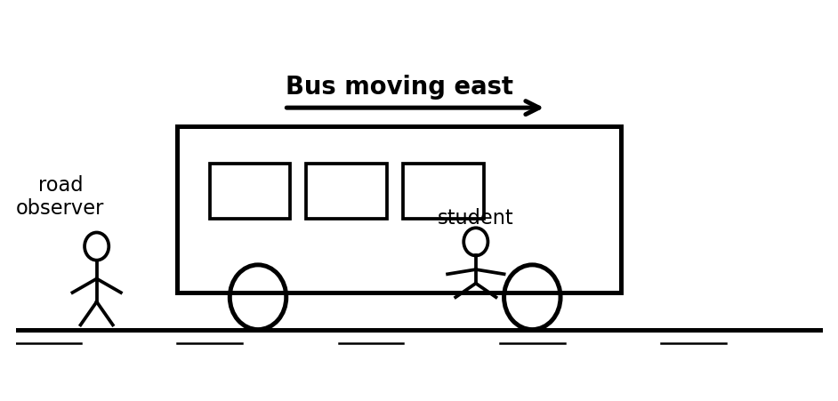
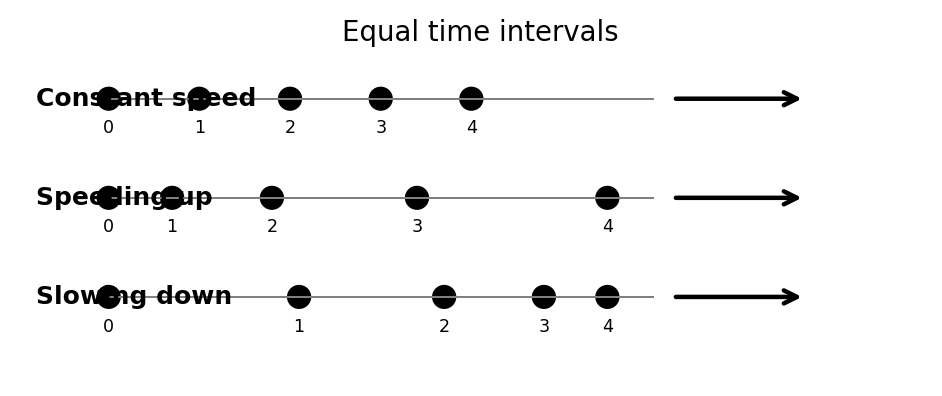
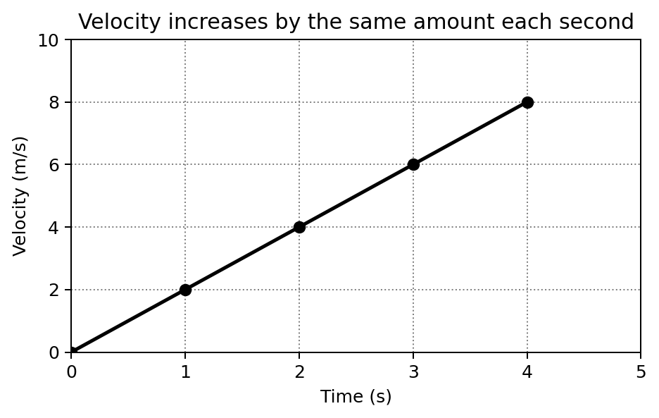

Conceptual Physics — Unit 2 Assessment Plan
Unit 2: Motion and Kinematics
Essential Standard
Students will analyze motion conceptually and quantitatively by describing motion relative to a frame of reference, distinguishing speed from velocity, interpreting acceleration as a change in velocity, modeling free fall, and using graphs, diagrams, data, and equations to explain how motion changes over time.
Section 2.1: Motion and Reference Frames
Textbook Sections: 3.1
Learning Target: Students will explain that motion is relative and describe an object’s motion using an appropriate frame of reference.
- I can explain why an object can be moving relative to one reference frame but not another.
- I can identify the reference frame used in a motion description.
- I can compare motion from two different points of view.
- I can explain why everyday motion is usually described relative to Earth’s surface.
Section 2.2: Speed and Velocity
Textbook Sections: 3.2, 3.3
Learning Target: Students will distinguish between speed and velocity and use distance, time, and direction to describe motion.
- I can calculate average speed from distance and time.
- I can distinguish instantaneous speed from average speed.
- I can explain that velocity includes both speed and direction.
- I can compare examples of constant speed, constant velocity, and changing velocity.
Section 2.3: Acceleration
Textbook Sections: 3.4
Learning Target: Students will explain acceleration as the rate at which velocity changes and identify acceleration from motion descriptions, data, and graphs.
- I can calculate acceleration from change in velocity and time.
- I can explain that acceleration can involve speeding up, slowing down, or changing direction.
- I can identify positive, negative, or zero acceleration from a motion situation.
- I can interpret simple motion graphs and connect them to velocity or acceleration.
Section 2.4: Free Fall Motion
Textbook Sections: 3.5
Learning Target: Students will describe free fall as motion under the influence of gravity alone and use simple free-fall relationships to determine speed or distance fallen.
- I can explain why objects in free fall accelerate at the same rate when air resistance is ignored.
- I can use $g \approx 10\text{ m/s}^2$ to determine speed gained during free fall.
- I can use free-fall patterns to compare distance fallen during different time intervals.
- I can distinguish free fall from falling with significant air resistance.
Section 2.5: Velocity Vectors and Motion Modeling
Textbook Sections: 3.6
Learning Target: Students will use velocity vectors, motion diagrams, and simple graphs to model and explain the motion of objects.
- I can represent velocity with arrows that show both speed and direction.
- I can compare velocity vectors to determine whether an object’s velocity is changing.
- I can connect motion diagrams, data tables, and graphs to written descriptions of motion.
- I can critique an incorrect motion model and revise it using evidence.
Unit 2 Formula / Symbol Limit
This unit remains conceptual before computational. The following formulas and symbolic relationships are enough for the entire unit.
- Average speed: $v=\frac{d}{t}$
- Distance at constant speed: $d=vt$
- Time from distance and speed: $t=\frac{d}{v}$
- Acceleration: $a=\frac{\Delta v}{t}$
- Change in velocity: $\Delta v=v_f-v_i$
- Free-fall speed from rest: $v=gt$
- Free-fall distance from rest: $d=\frac{1}{2}gt^2$
- Average velocity for constant acceleration: $v_{avg}=\frac{v_i+v_f}{2}$
No more than these eight formulas/symbolic relationships should be required for Unit 2 assessments.
Learning Ladder
| Rung | I Can Statement | Science Practice | DOK | Level |
|---|---|---|---|---|
| 8 | I can design, defend, or critique a motion model for an unfamiliar situation using words, data, graphs, formulas, and velocity vectors. | Construct Explanations / Argue from Evidence | DOK 4 | Above |
| 7 | I can compare two competing motion explanations or models and justify which one better fits the evidence. | Analyze and Evaluate Models | DOK 4 | Above |
| 6 | I can connect a motion graph, data table, velocity-vector diagram, and written scenario to explain how an object’s motion changes over time. | Use Models / Explain Phenomena | DOK 3 | Essential |
| 5 | I can identify and correct a misconception about speed, velocity, acceleration, free fall, or reference frames using a clear physics explanation. | Critique Reasoning | DOK 3 | Essential |
| 4 | I can calculate speed, time, distance, acceleration, free-fall speed, or free-fall distance in simple situations and interpret the answer in context. | Use Mathematical Thinking | DOK 2 | Essential |
| 3 | I can interpret motion diagrams, simple graphs, data tables, and velocity vectors to describe motion. | Develop and Use Models | DOK 2 | Essential |
| 2 | I can define and recognize key terms such as reference frame, speed, velocity, acceleration, free fall, and velocity vector. | Identify Patterns / Use Vocabulary | DOK 1 | Essential |
| 1 | I can recognize whether an object is at rest, moving at constant speed, changing speed, changing direction, or accelerating. | Observe and Classify | DOK 1 | Essential |
Format: 3–5 minute warm-up, quick check, card sort, image prompt, graph identification, mini-whiteboard response, or exit ticket
Purpose: Check whether students can recognize basic motion vocabulary, identify motion states, interpret simple visual representations, and distinguish speed, velocity, acceleration, free fall, and reference frames.
Assessment Ideas
- Motion Snapshot Identification Can Be Assessed After Unit 2, Section 2.1 — Students view simple sketches of people on a bus, a car on a road, and an observer standing still, then identify which objects are moving or at rest relative to different reference frames.
- Speed vs. Velocity Language Check Can Be Assessed After Unit 2, Section 2.2 — Students decide whether short statements describe speed, velocity, or neither, paying attention to whether direction is included.
- Motion Diagram Card Sort Can Be Assessed After Unit 2, Section 2.3 — Students sort simple dot diagrams into constant speed, speeding up, slowing down, or unclear motion.
- Free Fall or Not Free Fall? Can Be Assessed After Unit 2, Section 2.4 — Students classify everyday falling situations, such as a dropped rock, falling paper, skydiver with parachute, and coin in a vacuum, as free fall or not free fall, then give a one-sentence reason.
What this tells the teacher:
Students who struggle here need more direct support with motion language and visual interpretation before moving into formulas, graphs, and multi-step explanations.
Format: Exit ticket, partner check, graph interpretation, data-table task, short calculation, diagram task, or whiteboard response
Purpose: Check whether students can apply motion formulas, interpret simple motion diagrams and graphs, use data to describe motion, and connect numerical results to physical meaning.
Assessment Ideas
- Average Speed from Real Data Can Be Assessed After Unit 2, Section 2.2 — Students use a short table of distance and time from a walking or rolling-cart scenario to calculate average speed and describe the motion in words.
- Velocity Change Scenario Task Can Be Assessed After Unit 2, Section 2.3 — Students analyze short scenarios and determine whether speed changes, direction changes, velocity changes, or acceleration occurs.
- Motion Graph Match-Up Can Be Assessed After Unit 2, Section 2.3 — Students match simple distance-time or velocity-time graphs to written descriptions of motion, then justify one match.
- Free Fall Pattern Table Can Be Assessed After Unit 2, Section 2.4 — Students complete a table showing speed gained each second during free fall and use the pattern to determine speed or distance for a dropped object.
What this tells the teacher:
Students at this level can usually apply formulas and interpret familiar representations. Errors reveal whether students are confusing distance with speed, speed with velocity, or velocity with acceleration.
Format: Constructed response, graph explanation, misconception analysis, CER, ranking task, gallery walk, or group whiteboard defense
Purpose: Check whether students can reason strategically, explain changing motion, connect multiple representations, and correct common misconceptions.
Assessment Ideas
- Reference Frame Argument Can Be Assessed After Unit 2, Section 2.1 — Students analyze a situation where two observers describe the same object differently, then explain why both descriptions can be correct depending on the reference frame.
- Acceleration Without Speeding Up Can Be Assessed After Unit 2, Section 2.3 — Students explain why an object moving at constant speed in a circle is still accelerating because its direction changes.
- Graph, Table, and Story Consistency Check Can Be Assessed After Unit 2, Section 2.5 — Students compare a motion graph, a data table, and a written description, then decide whether all three represent the same motion.
- Free Fall Misconception Response Can Be Assessed After Unit 2, Section 2.4 — Students respond to the claim, “Heavier objects fall faster because gravity pulls harder on them,” and revise the explanation using free fall and air resistance.
What this tells the teacher:
This level shows whether students understand the physics behind the formulas and definitions. These tasks are useful for deciding who is ready for modeling and who needs reteaching on acceleration, velocity, free fall, or graph interpretation.
Format: Performance task, extended response, investigation reflection, motion-modeling task, critique task, or strategy defense
Purpose: Check whether students can synthesize data, graphs, velocity vectors, formulas, and conceptual explanations in unfamiliar real-world situations.
Assessment Ideas
- Build a Motion Story from Evidence Can Be Assessed After Unit 2, Section 2.5 — Students receive a data table, motion diagram, or graph and write a complete motion story that describes speed, velocity, acceleration, and evidence.
- Critique a Flawed Motion Graph Can Be Assessed After Unit 2, Section 2.5 — Students evaluate a graph that does not match a written scenario, identify the error, revise the model, and explain why the corrected version is better.
- Mini-Investigation: Cart on a Ramp Can Be Assessed After Unit 2, Section 2.3 — Students use or interpret ramp-and-cart data to decide whether the cart moved at constant speed or accelerated, then defend their claim with evidence.
- Motion Model Defense Can Be Assessed After Unit 2, Section 2.5 — Students choose the best model for a real-world situation, such as a cyclist braking, a drone turning, or a ball falling, and defend the model using graphs, vectors, formulas, and words.
What this tells the teacher:
DOK 4 tasks show whether students can transfer motion understanding to unfamiliar situations and defend their reasoning using models, formulas, graphs, and evidence.
Assessment is designed for a 45-minute time limit.
The Unit 2 summative will be created as one consolidated HTML file with six versions of the assessment, an answer key, and a standardized two-page answer sheet. Test questions will be printed without workspaces so students use the answer sheet for responses and formula work.
Assessment File Structure
Single summative file: ../summative/unit_2_summative/unit2_summative_assessment.html
The summative file will include six versions of the assessment. Each version should assess the same Unit 2 standards, DOK levels, vocabulary expectations, misconception checks, graph skills, motion-modeling skills, and formula skills, but with varied numbers, contexts, diagrams, wording, and answer order.
Recommended Student Assessment Structure
Questions 1–16: Multiple Choice — Students answer on the standardized bubble sheet.
- 5 Questions DOK 1 — Vocabulary, motion-state recognition, reference frames, speed versus velocity, acceleration language, and free-fall recognition.
- 6 Questions DOK 2 — Interpreting motion diagrams or graphs, calculating speed or acceleration, identifying speed versus velocity, recognizing reference frames, and applying free-fall patterns.
- 4 Questions DOK 3 — Analyzing misconceptions, connecting graphs to motion, interpreting acceleration, comparing free-fall situations, and choosing the best explanation.
- 1 Question DOK 4 — Evaluating a model, critique, investigation-based reasoning, or choosing the best evidence-supported explanation.
Questions 17–20: Free Response / Formula and Reasoning Questions — These are the last four questions of each assessment version. Students complete these on the back side of the standardized answer sheet in four numbered quadrants.
- Question 17: Formula / average-speed reasoning using $v=\frac{d}{t}$, $d=vt$, or $t=\frac{d}{v}$.
- Question 18: Formula / acceleration reasoning using $a=\frac{\Delta v}{t}$ or $\Delta v=v_f-v_i$.
- Question 19: Formula / free-fall reasoning using $v=gt$, $d=\frac{1}{2}gt^2$, or $v_{avg}=\frac{v_i+v_f}{2}$.
- Question 20: Motion graph, velocity-vector model, context-rich application, critique, or short CER-style reasoning task.
Answer Key and Answer Sheet Pages
After the six assessment versions, the summative file will include an answer key.
The final two pages of the file will be a standardized answer sheet:
- Answer Sheet Page 1: Assessment Name, Student Name, bubble area for selecting version number, and bubbles for multiple-choice questions 1–16.
- Answer Sheet Page 2: Prints on the back of Page 1 and is divided into four quadrants labeled 17, 18, 19, and 20 for the free-response formula and reasoning questions.
Question-Type Balance
- Standard wording: about 5 questions
- Inverted wording: about 5 questions
- Context-rich wording: about 6 questions
- Vocabulary / diagram / model-based wording: about 4 questions
Assessment Bank Note
The assessment bank should remain open-response, short-answer, diagram-based, graph-based, and explanation-based. Bank items should not be written as multiple-choice questions. Selected bank items can later be adapted into multiple-choice summative questions with misconception-based distractors for questions 1–16.
Scoring Recommendation
Suggested weighting: Multiple Choice: 16 points; Free Response: 16 points total, 4 points per quadrant; Total: 32 points.
- 4: Accurate answer, clear reasoning, correct vocabulary, correct formula use or model, and complete explanation.
- 3: Mostly correct with minor error or missing detail.
- 2: Partial understanding shown, but reasoning, diagram, graph, or calculation is incomplete.
- 1: Minimal correct physics shown.
- 0: Blank, unrelated, or no meaningful evidence of understanding.
A — Highly Proficient
The student demonstrates a strong and flexible understanding of Unit 2 concepts. Work is accurate, well-organized, and supported by clear reasoning. The student can explain reference frames, speed, velocity, acceleration, free fall, and velocity vectors in familiar and unfamiliar situations. The student can interpret graphs and data, use formulas appropriately, critique motion models, and defend claims using evidence.
B — Proficient
The student demonstrates solid understanding of the essential Unit 2 concepts. Most work is accurate, and the student can complete standard and moderately complex tasks independently. The student can calculate speed and acceleration, distinguish speed from velocity, interpret simple motion graphs or diagrams, describe free fall, and apply basic motion formulas. Explanations are generally clear, though they may lack some precision or depth.
C — Developing Proficiency
The student demonstrates partial but passable understanding of Unit 2 concepts. The student can complete many routine tasks but may need support with graph interpretation, acceleration reasoning, velocity vectors, free-fall formulas, or explaining motion from different reference frames. Work may contain errors or incomplete explanations, but there is enough evidence that the student understands the main ideas.
Not Yet — Insufficient Evidence
The student does not yet demonstrate sufficient understanding of the essential Unit 2 concepts. Work shows major errors, missing reasoning, confusion between speed and velocity, difficulty interpreting acceleration, incorrect formula use, weak graph interpretation, or weak connections between motion models and evidence. The student may need reteaching, additional practice, or reassessment to demonstrate proficiency.
Strictly Assessment Bank
This bank is organized by DOK so future formative versions and summative versions can be assembled quickly. The bank should remain open-response, short-answer, diagram-based, graph-based, and explanation-based. Bank questions should not be multiple choice.
Figure naming convention for future assessment files: use unit2-dok#-#-problem#.png or descriptive names in the figures/ folder.
Use the snapshot to name two different reference frames that could be used to describe the student’s motion.

State whether each description gives speed or velocity.
- 12 m/s
- 12 m/s east
- 55 km/h north
- 55 km/h
Complete the sentence using the best vocabulary term: The rate at which velocity changes is called __________.
Complete the sentence using the best vocabulary term: A falling object affected only by gravity is in __________.
In your own words, explain the difference between average speed and instantaneous speed.
Use the motion diagrams to classify each row as constant speed, speeding up, or slowing down.

Classify each situation as constant velocity, changing velocity, or not enough information.
- A car travels north at 20 m/s.
- A car travels around a circular track at 20 m/s.
- A runner speeds up from rest.
- A skateboard rolls in a straight line at constant speed.
A ball is thrown straight up. At the top of its path, its speed is momentarily zero. Is the ball still accelerating? Answer with a short explanation.
A bicyclist travels 120 meters in 10 seconds. Determine the bicyclist’s average speed.
Determine the distance traveled by a car moving at a constant speed of 15 m/s for 8 seconds.
A runner changes velocity from 2 m/s to 8 m/s in 3 seconds. Determine the runner’s acceleration.
A skateboarder moving east at 6 m/s turns and moves west at 6 m/s. Explain whether the skateboarder’s speed changed, velocity changed, or both.
A ball is dropped from rest. Using $g \approx 10\text{ m/s}^2$, determine its speed after 4 seconds of free fall.

A rock is dropped from rest. Using $d=\frac{1}{2}gt^2$, determine how far it falls in 3 seconds. Use $g \approx 10\text{ m/s}^2$.
A student records the following velocity data for a cart.
| Time | Velocity |
|---|---|
| 0 s | 0 m/s |
| 1 s | 2 m/s |
| 2 s | 4 m/s |
| 3 s | 6 m/s |
Determine the cart’s acceleration and explain how the table shows it.

Use the graph match-up image. Match two graphs to possible written motion descriptions, then justify one match.

A student says, “If two objects have the same speed, they must have the same velocity.” Explain the misconception and revise the statement.
A car moves around a circular track at a constant speed. Explain why the car is accelerating even though its speed does not change.
A falling ball gains about 10 m/s of speed each second. Explain how this pattern shows acceleration.
A student says, “At the top of its path, a thrown ball has no velocity, so it has no acceleration.” Do you agree? Explain using free-fall reasoning.
Compare these two situations.
Situation A: A student walks forward inside a bus moving at constant speed.
Situation B: A student stands still inside the same bus.
Explain how each student’s motion could be described differently from the reference frame of the bus and the reference frame of the road.
A cart’s velocity changes by the same amount every second. Explain how you know the cart has constant acceleration.
A feather and a coin are dropped at the same time. In air, the coin lands first. In a vacuum, they land together. Explain the difference between the two situations.
A student draws a velocity-vector diagram for an object moving in a straight line at constant velocity, but the arrows get longer each second. Critique the diagram and explain what the arrows should look like.
A student records position data for a toy car and claims the car is moving at constant speed.
- Describe what the spacing between motion-diagram dots should look like if the claim is correct.
- Describe what a distance-time graph should look like if the claim is correct.
- Explain what evidence would prove the claim wrong.
Two students explain the motion of a ball thrown straight upward.
Student A: “The ball accelerates upward on the way up, has zero acceleration at the top, and accelerates downward on the way down.”
Student B: “The ball’s velocity changes throughout the motion because gravity accelerates it downward the whole time.”
Choose the better explanation, critique the weaker explanation, and support your answer using physics vocabulary.
Design a short investigation that could show the difference between constant speed and acceleration.
Your response should include materials, procedure, what students should measure, what pattern would show constant speed, and what pattern would show acceleration.
A student creates a graph for a dropped ball but shows the ball falling the same distance during each second.
- Critique the graph.
- Explain what should happen to the distance fallen each second.
- Revise the model in words or with a sketch description.
- Use free-fall reasoning in your explanation.

A delivery drone flies east at constant speed, then turns north while keeping the same speed.
Create a motion model for the drone, explain whether its speed changes, explain whether its velocity changes, and defend whether the drone is accelerating.

A group of students uses a ramp and cart to collect motion data. Their table shows the cart’s velocity increases by about the same amount each second, but one student claims the cart is moving at constant velocity because it keeps moving in the same direction.
Evaluate the student’s claim, use the data pattern as evidence, and explain the difference between constant direction and constant velocity.